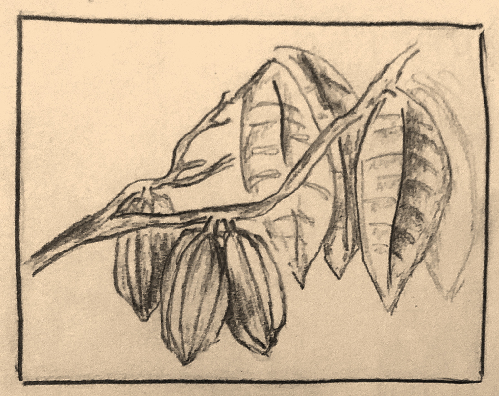
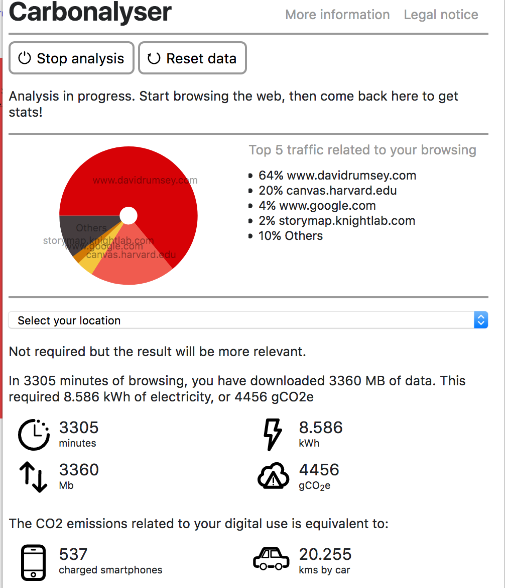

Sir Hans Sloane & the Mythology of Milk Chocolate
My project was centered around a reading by James Delbourgo about the history and science of chocolate as related to U.K. physician-botanist Hans Sloane. Popular legend has it that Sloane "invented" milk chocolate after his 1687 voyage to Jamaica, forever changing the chocolate industry. However, the truth surrounding Sloane and his work, botanical and culinary, is not so innocuous. Re-examining his work under modern analytic frameworks shows that Sloane used many of the same methods and motivations to collect knowledge about enslaved people as he did the scientific objects, flora, and fauna in his collection. While the combination of botany and ethnography that he practiced has provided valuable knowledge for the field of natural history, the shadows of dehumanization that underscore his work are difficult to reconcile.
This specific basemap is a German map from 1854 created by cartographer Joseph Meyer. It is quite unique in that it's a map of food commodity crops, including cacao, and their production across the world. The map also distinguishes "cultural districts" of certain crops (i.e. where they are most frequently consumed). As a European map from the 19th century, this is a fascinating pre-industrial look at what knowledge of global food-crop cultivation might have looked like after Sloane's death. Though it is a German map, I felt strongly that its culinary and European connections made it a good fit for the base of my project.
This is the StoryMap I presented.
Reflections on the Project
At times, this project was very challenging. I had some difficulty keeping my slides concise while still trying to tell a compelling story. StoryMap, while an excellent platform to tell a chronological story, certainly has its limitations, both physical and analytical. First, the platform's incompatibility with narratives that are not purely chronological made it difficult to provide important historical content without distracting from the central narrative. I was also frustrated by the inability to change text color, which made it a lot more difficult to design for accessibility in the form of strong contrast and legibility.
Map Markers
Inspired by my struggle trying to change the map's marker color, I drew up custom map markers for this project instead. This hand-drawn image, shown here, is an artistic rendering inspired heavily by Sloane's own etching of cacao, as well as several other botanical drawings of the plant from that time period. It appears as the project page favicon as well, to aid readers in distinguishing the project page from other browser tabs.

Environmental Footprint

Running a Carbonalyser for this project was kind of shocking. My results came in at 3,305 minutes, which is equivalent to 4,456 grams of carbon dioxide emissions, or driving over 20km by car. As a digitally-native academic, I never realized how many energetic resources are still required even when doing research and other academic work digitally. It's really interesting to think about the ways in which our energy expenditure as related to technology can be cut back, especially relative to other kinds of carbon footprints. Especially as conversations around ecological justice ramp up, it's crucial to be cognizant of all of the ways we can have environmental impacts on the world.
Sources
Sir Hans Sloane & the Mythology of Milk Chocolate
Map: Meyer, Joseph. “Ubersicht der Kulturpflanzen welche die Hauptnahrungsmittel liefern.” Bibliographischen Instituts, 1854. https://davidrumsey.georeferencer.com/maps/258302348116/.
1. Mesoamerica
- Texts
- Delbourgo, James. “Sir Hans Sloane’s Milk Chocolate and the Whole History of the Cacao.” Social Text 29, no. 1 (106) (March 1, 2011): 71–101. https://doi.org/10.1215/01642472-1210274.
- Loveman, Kate. “The Introduction of Chocolate into England: Retailers, Researchers, and Consumers, 1640–1730.” Journal of Social History 47, no. 1 (September 1, 2013): 27–46. https://doi.org/10.1093/jsh/sht050.
2. Spanish Influence
- Image
- Troizat, Ambre. Français : Page de Titre de : Antonio Colmenero de Ledesma, René Moreau et Barthélémy Marradon (Trad. de L’espagnol), Du Chocolate : Discours Curieux Divisé En Quatre Parties, Paris, Sébastien Cramoisy, 1643, 59 P., -(FR-BnF 30259423p). April 24, 2016. Own work. https://commons.wikimedia.org/wiki/File:Antonio_Colmenero_de_Ledesma_-_Du_chocolat,_discours_curieux_divis%C3%A9_en_quatre_parties,_1643.png.
- This file is licensed under the Creative Commons Attribution-Share Alike 4.0 International License.
- Texts
- Delbourgo, James. “Sir Hans Sloane’s Milk Chocolate and the Whole History of the Cacao.” Social Text 29, no. 1 (106) (March 1, 2011): 71–101. https://doi.org/10.1215/01642472-1210274.
- Loveman, Kate. “The Introduction of Chocolate into England: Retailers, Researchers, and Consumers, 1640–1730.” Journal of Social History 47, no. 1 (September 1, 2013): 27–46. https://doi.org/10.1093/jsh/sht050.
3. The Slave Trade: West Africa -> Jamaica
- Texts
- Delbourgo, James. “Sir Hans Sloane’s Milk Chocolate and the Whole History of the Cacao.” Social Text 29, no. 1 (106) (March 1, 2011): 71–101. https://doi.org/10.1215/01642472-1210274.
- Maxtone-Graham, Ysenda. “Tainted by the Blood of Slaves.” Mail Online, June 22, 2017. http://www.dailymail.co.uk/~/article-4630204/index.html.
4. Hans Sloane
- Image
- Slaughter, Stephen. Sir Hans Sloane, Bt. 1736. Oil on canvas, 49.5 x 39.75 in. NPG 569. National Portrait Gallery, London. https://www.npg.org.uk/collections/search/portrait/mw05823/Sir-Hans-Sloane-Bt.
- This file is licensed under the Attribution-NonCommercial-NoDerivs 3.0 Unported (CC BY-NC-ND 3.0) license. Licensing occurred via the Rights and Images Department of the National Portrait Gallery.
- Texts
- Delbourgo, James. “Sir Hans Sloane’s Milk Chocolate and the Whole History of the Cacao.” Social Text 29, no. 1 (106) (March 1, 2011): 71–101. https://doi.org/10.1215/01642472-1210274.
5. Exploration of Jamaica
- Texts
- Delbourgo, James. “Sir Hans Sloane’s Milk Chocolate and the Whole History of the Cacao.” Social Text 29, no. 1 (106) (March 1, 2011): 71–101. https://doi.org/10.1215/01642472-1210274.
- Maxtone-Graham, Ysenda. “Tainted by the Blood of Slaves.” Mail Online, June 22, 2017. http://www.dailymail.co.uk/~/article-4630204/index.html.
6. Jamaica's Influence & the "Heroic Narrative"
- Texts
- Delbourgo, James. “Sir Hans Sloane’s Milk Chocolate and the Whole History of the Cacao.” Social Text 29, no. 1 (106) (March 1, 2011): 71–101. https://doi.org/10.1215/01642472-1210274.
7. Botanical & Academic Impact
- Texts
- Delbourgo, James. “Sir Hans Sloane’s Milk Chocolate and the Whole History of the Cacao.” Social Text 29, no. 1 (106) (March 1, 2011): 71–101. https://doi.org/10.1215/01642472-1210274.
8. London Today
- Texts
- Delbourgo, James. “Sir Hans Sloane’s Milk Chocolate and the Whole History of the Cacao.” Social Text 29, no. 1 (106) (March 1, 2011): 71–101. https://doi.org/10.1215/01642472-1210274.
- Sloane’s Hot Chocolate. “Sir Hans Sloane - a Chocolate Pioneer.” Accessed December 10, 2019. https://www.sloaneshotchocolate.com/pages/the-chocolate-pioneer.
9. Jamaica Today
- Texts
- Delbourgo, James. “Sir Hans Sloane’s Milk Chocolate and the Whole History of the Cacao.” Social Text 29, no. 1 (106) (March 1, 2011): 71–101. https://doi.org/10.1215/01642472-1210274.
10. A Bittersweet Cultural Legacy
- Texts
- Delbourgo, James. “Sir Hans Sloane’s Milk Chocolate and the Whole History of the Cacao.” Social Text 29, no. 1 (106) (March 1, 2011): 71–101. https://doi.org/10.1215/01642472-1210274.
- Maxtone-Graham, Ysenda. “Tainted by the Blood of Slaves.” Mail Online, June 22, 2017. http://www.dailymail.co.uk/~/article-4630204/index.html.
Licensing
"Sir Hans Sloane & the Mythology of Milk Chocolate" by Sunny Levine is licensed under the Creative Commons Attribution-Share Alike 4.0 International License. Based on https://levinesunny.github.io/histsci-119/.